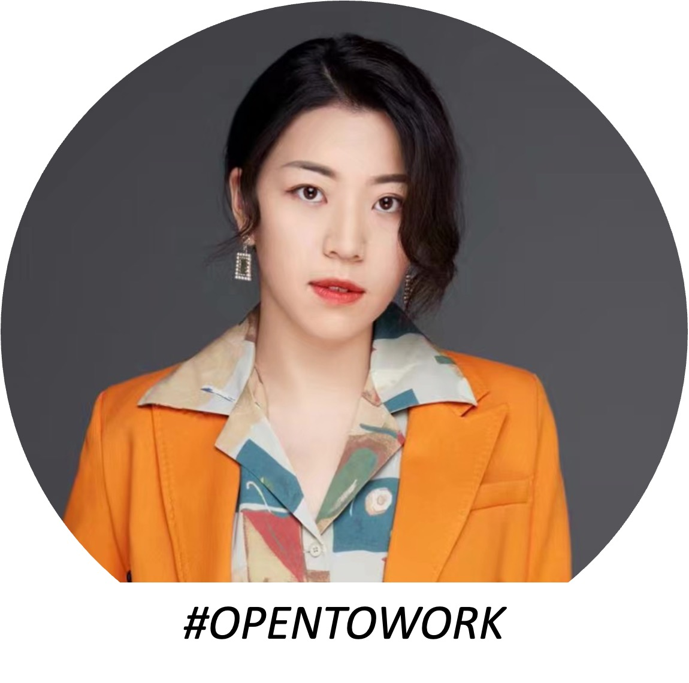

Hi! I’m Xihan Liu
A second-year ECE Masters student at Johns Hopkins University,
fortunately advised by
Dr. Archana Venkataraman.
My study and professional work focuses on Image Signal Processing, Computer Vision and their related industrial applications.
My study and professional work focuses on Image Signal Processing, Computer Vision and their related industrial applications.
Johns Hopkins University
09 / 2020 - Present
M.S., Electrical and Computer Engineering
University of California, Santa Barbara
09 / 2016 - 05 / 2020
B.S., Electrical and Computer Engineering
Career Interests
My research interest is machine learning, including differential privacy, domain adaptation and federated learning.
Recently, I am focusing on ...
I am also actively working on an open source project Auto DP, which is ...
In forthcoming years, I wish to become a full-time ...
Recently, I am focusing on ...
I am also actively working on an open source project Auto DP, which is ...
In forthcoming years, I wish to become a full-time ...
Experience
Student Researcher @ The PULSE Lab
CornerNet3D for Photoacoustic Visual Servoing System
1. Integrated with existing code base for CornerNet to adapt medical image datasets and generated annotations of datasets in VOC and MS COCO format using MATLAB.
2. Designed a CornerNet3D-based photoacoustic point source localization system using Pytorch and NumPy with a real-time robotic control system for visual servoing of needle tips in phantoms in ROS OS.CornerNet3D for Photoacoustic Visual Servoing System 1. Integrated with existing code base for CornerNet to adapt medical image datasets and generated annotations of datasets in VOC and MS COCO format using MATLAB. 2. Designed a CornerNet3D-based photoacoustic point source localization system using Pytorch and NumPy with a real-time robotic control system for visual servoing of needle tips in phantoms in ROS OS.
Skills: Computer Vision · Python (Programming Language) · Linux · Photoacoustic Imaging · Robot Operating System (ROS) · PyTorch · CUDA
2. Designed a CornerNet3D-based photoacoustic point source localization system using Pytorch and NumPy with a real-time robotic control system for visual servoing of needle tips in phantoms in ROS OS.CornerNet3D for Photoacoustic Visual Servoing System 1. Integrated with existing code base for CornerNet to adapt medical image datasets and generated annotations of datasets in VOC and MS COCO format using MATLAB. 2. Designed a CornerNet3D-based photoacoustic point source localization system using Pytorch and NumPy with a real-time robotic control system for visual servoing of needle tips in phantoms in ROS OS.
Skills: Computer Vision · Python (Programming Language) · Linux · Photoacoustic Imaging · Robot Operating System (ROS) · PyTorch · CUDA
Information Experience Engineer @ HUAWEI
1. Led a team of 3 entry-level engineers in designing and maintaining configuration guides for NetEngine Routers.
2. Professional in computer network fundamentals with core and novelty technology such as NSR, SRv6, SD-WAN, etc.
3. Integrated Flask Framework, XLRD, and Pandas in Python to independently build 3 internal tools to analyze workload and improve the whole team’s efficiency by 20%.
4. Presented two tutorials about upgrading switches and switching modes for APs of the wireless network to over 100 people. Communicated with global customers through online meetings three times a month.
Skills: Flask · Pandas (Software) · xlrd · Python
2. Professional in computer network fundamentals with core and novelty technology such as NSR, SRv6, SD-WAN, etc.
3. Integrated Flask Framework, XLRD, and Pandas in Python to independently build 3 internal tools to analyze workload and improve the whole team’s efficiency by 20%.
4. Presented two tutorials about upgrading switches and switching modes for APs of the wireless network to over 100 people. Communicated with global customers through online meetings three times a month.
Skills: Flask · Pandas (Software) · xlrd · Python
Java Software Engineer @ BITE Investments
1. Developed an investment app for Android brench with DocuSign1. Developed an investment app for Android brench with DocuSign
Software Engineer Intern @ Neusoft
1. Extracted data from MySQL Server and provided maintenance services for the medical system application.
2. Improved the quality of patients’ data to Top 5 in a domestic race from Oracle by rearchitecting the database.
3. Developed one C# API to extract staff’s financial data from Oracle based on the manager’s requirement.
4. Bug fixes and features development for medical software used by doctors and nurses.
Skills: C# · MySQL
2. Improved the quality of patients’ data to Top 5 in a domestic race from Oracle by rearchitecting the database.
3. Developed one C# API to extract staff’s financial data from Oracle based on the manager’s requirement.
4. Bug fixes and features development for medical software used by doctors and nurses.
Skills: C# · MySQL
Software Engineer Intern @ LC HOME
1. Maintained the online shop on Amazon.
2. Dealt with the networking problem for the officers.
3. Contacted the foreign contractor in the US.
2. Dealt with the networking problem for the officers.
3. Contacted the foreign contractor in the US.

Resume